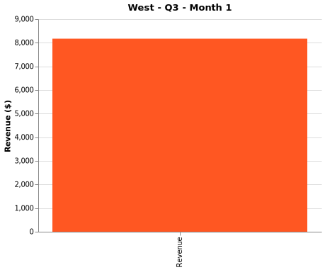
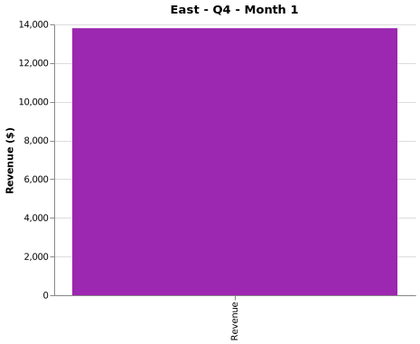
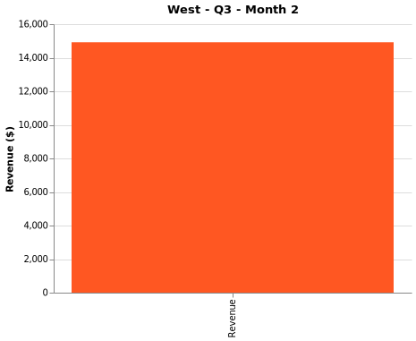
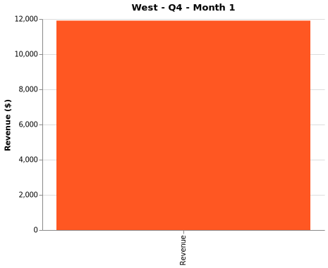
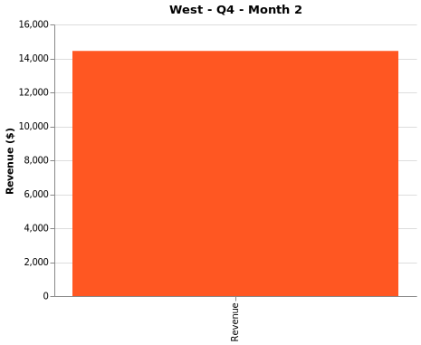
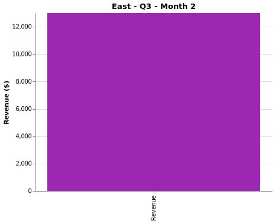
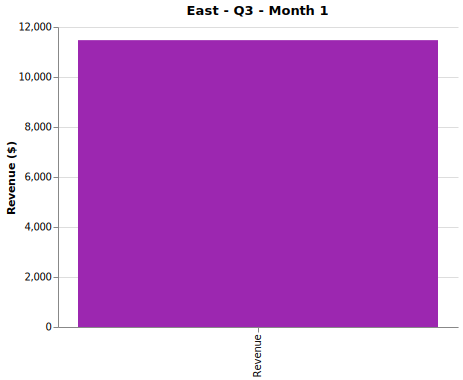
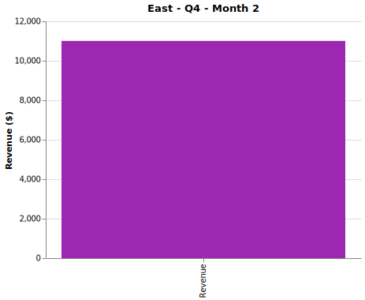

This example demonstrates using Slides with external storage.
When using external dataformats (parquet, csv_external, json_external), slide images are stored in a slides/ subdirectory rather than being embedded in the HTML file.
Creates a portable project directory structure
Slide images stored in slides/ subdirectory
Data stored in data/ subdirectory (if applicable)
Useful for large slide sets or when you need external file access
Revenue Analysis (External Storage)
Slides stored externally in slides/ directory. Useful for large datasets or when images need to be accessible as separate files.
Filters








Slide 1 / 2
1.0s
Keyboard shortcuts: ← Previous, → Next, Space Play/Pause
Summary
This page demonstrated four ways to use the Slides chart type:
Method 1 - From Directory (SVG): Load existing SVG files with automatic group detection
Method 2 - From Function (SVG, Embedded): Generate VegaLite charts as embedded SVG
Method 3 - From Function (External): Generate charts with external storage using parquet dataformat
Method 4 - From Directory (JPEG, Embedded): Load JPEG photographs as embedded base64 data
Image Format Comparison
SVG (Vector): Drawing instructions, scalable, small file size - perfect for charts
JPEG/PNG (Bitmap): Pixel data as base64, larger file size - needed for photographs
Storage Options
Embedded (csv_embedded, json_embedded): All images embedded in HTML - single portable file
External (csv_external, json_external, parquet): Images stored in slides/ directory - better for large datasets
Key Features
Interactive play/pause controls
Adjustable playback speed (0.05s to 5s per slide on log scale)
Keyboard shortcuts for navigation
Filter dropdowns for group dimensions
Support for PNG, JPEG, SVG, and PDF formats
Supports VegaLite.jl, Plots.jl, Makie, or custom chart objects
Tips:
Use arrow keys to navigate slides quickly
Press space to toggle play/pause
Change filters to see different slide combinations